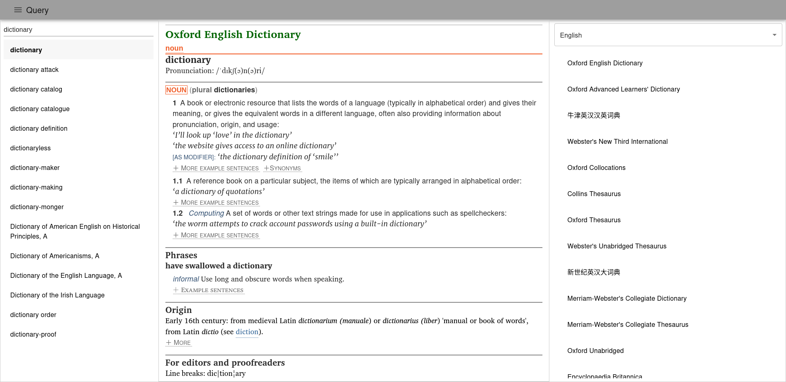
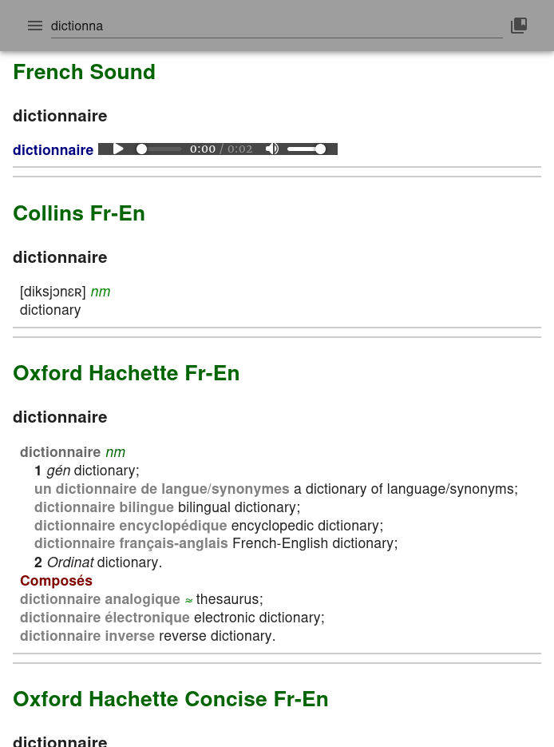

Welcome to SilverDict!
SilverDict is a free and open source dictionary lookup program that is cross-platform and follows the client/server model (translation: the app you downloaded from F-Droid won't work without a server running, locally or remotely). The server side is written in Python with Flask and could be deployed to Linux, Mac OS, Windows, Android (via Termux) and iOS (via a-Shell). It has currently two clients: a React web app that has both desktop and mobile interfaces, and an Android app.
Screenshots


The dark theme is rendered with the Dark Reader extension.
Features
- Supports DSL, StarDict and MDict
- Deployable even on mobile devices
- One home server for all your devices
- Just works, as expected
Contact
Have problems or suggestions but don’t have a GitHub account? Send me an e-mail at blandilyte@gmail.com.